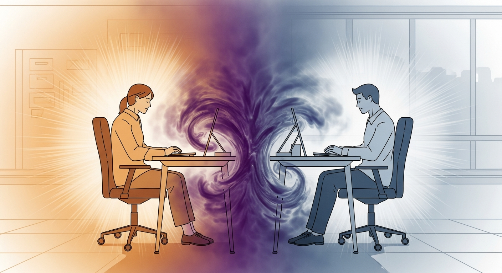

Collega tossico o energia incompatibile? Come distinguere la differenza
Quel collega ti esaurisce, ti irrita, ti rende insicuro. Prima di etichettarlo come tossico, scopri se il problema è la sua aura che interferisce con la tua.

In ogni ufficio c'è quella persona che ti svuota. Entri al mattino con le energie a posto, ti siedi alla scrivania accanto alla sua, e nel giro di un'ora senti una stanchezza che non corrisponde a nulla che tu abbia fatto. Oppure c'è quel collega che ti mette in agitazione senza motivo apparente, o quello che ti fa sentire inadeguato ogni volta che parla, anche quando dice cose neutre. L'etichetta che la cultura lavorativa ha trovato per queste situazioni è "collega tossico", ma in molti casi questa etichetta è imprecisa e fuorviante perché il problema è meccanico, non caratteriale.
Come interagiscono le aure in un ambiente di lavoro?
Nel sistema Human Design, ogni persona ha un'aura che si estende per circa due metri intorno al corpo e che interagisce costantemente con le aure delle persone vicine. In un ufficio, e soprattutto in un open space, le aure di tutti si sovrappongono per otto ore al giorno, e questo genera dinamiche energetiche che le persone sentono ma non sanno nominare.
Ogni tipo energetico ha un'aura con una forma diversa. Il Generatore ha un'aura avvolgente e magnetica che attrae le situazioni verso di sé e crea un campo in cui le persone si sentono accolte e incluse. Il Manifestatore ha un'aura chiusa che spinge verso l'esterno e crea uno spazio impenetrabile intorno a sé, percepito dagli altri come distanza, esclusione o lieve minaccia. Il Proiettore ha un'aura focalizzata che entra nel campo dell'altro e lo legge in profondità, percepita come attenzione intensa o come invasione a seconda che sia stata invitata o meno. Il Riflettore ha un'aura resistente e campionatrice che riflette l'energia dell'ambiente e la amplifica.
Quando due aure incompatibili si sovrappongono per ore ogni giorno, il risultato è un disagio cronico che entrambi sentono ma che nessuno dei due capisce, perché non corrisponde a nessun evento specifico.
Quali combinazioni creano più attrito in ufficio?
Un Proiettore con il centro emozionale aperto seduto accanto a un collega con il centro emozionale definito assorbirà e amplificherà ogni fluttuazione emotiva del collega. Se il collega ha una giornata storta, il Proiettore la sentirà amplificata nel proprio corpo come ansia, irritazione o tristezza, e la attribuirà a se stesso o all'ambiente senza capire che sta amplificando qualcosa che non è suo.
Un Generatore accanto a un Manifestatore può sentirsi costantemente bloccato. L'aura chiusa del Manifestatore crea una sensazione di resistenza che il Generatore interpreta come rifiuto o ostilità, anche quando il Manifestatore è completamente concentrato sulle sue cose e non ha alcuna intenzione negativa. La reazione del Generatore è spesso quella di cercare di "rompere" quella chiusura forzando l'interazione, il che irrita il Manifestatore e peggiora la dinamica.
Due Proiettori che lavorano insieme senza Generatori nel team possono sentirsi entrambi svuotati, perché nessuno dei due produce energia sacrale e ciascuno cerca inconsciamente di attingere dall'altro, trovandolo vuoto. Il risultato è un circolo di esaurimento reciproco in cui entrambi pensano che sia l'altro a non fare abbastanza.
Come gestire queste dinamiche senza cambiare lavoro?
La prima cosa da fare è calcolare la propria carta e, se possibile, quella del collega con cui si ha l'attrito maggiore. La carta Human Design gratuita mostra i centri definiti e aperti di ciascuno, e il confronto rende immediatamente visibile dove avviene l'interferenza.
Il secondo passo è la distanza strategica. Non serve cambiare ufficio o evitare il collega: nella maggior parte dei casi basta aumentare la distanza fisica (le aure si indeboliscono oltre i due metri), usare comunicazione asincrona dove possibile (email invece di conversazione faccia a faccia quando la dinamica è particolarmente intensa), e prendersi momenti di solitudine durante la giornata per scaricare l'energia assorbita.
Il terzo passo, per i team che vogliono lavorare su queste dinamiche in modo strutturato, è l'analisi del gruppo attraverso il sistema BG5, che mappa la composizione energetica del team e identifica le interferenze strutturali con raccomandazioni concrete per la disposizione fisica degli spazi, la comunicazione e la distribuzione dei ruoli.
La differenza tra un conflitto personale e un'incompatibilità energetica è che il primo richiede mediazione o separazione, mentre la seconda si risolve con consapevolezza e piccoli aggiustamenti pratici. Nella maggior parte dei casi lavorativi, ciò che viene etichettato come "relazione tossica" è in realtà un condizionamento energetico che nessuno dei due conosce.
Domande Frequenti
Come distinguere un collega realmente tossico da una incompatibilità energetica?
Un collega realmente tossico ha un pattern di comportamento intenzionalmente dannoso: manipolazione, sabotaggio, aggressione passiva deliberata. Un'incompatibilità energetica genera disagio senza che nessuno dei due stia facendo qualcosa di sbagliato intenzionalmente. Il test è: quando quella persona è fuori ufficio per una settimana, il disagio scompare completamente? Se sì, è probabile che sia un effetto del suo campo energetico sul tuo, non un comportamento tossico deliberato.
Perché certi colleghi mi svuotano e altri mi caricano?
Dipende dalla combinazione dei centri energetici definiti e aperti. I tuoi centri aperti amplificano l'energia dei centri definiti dell'altra persona. Se il tuo centro Sacrale è aperto e il collega ha il Sacrale definito, la sua energia lavorativa ti invade e ti fa sentire che dovresti tenere il suo stesso ritmo. Quando se ne va, l'energia cala e tu ti senti svuotato.
Si può migliorare la compatibilità energetica in ufficio?
La compatibilità energetica non si cambia, ma la consapevolezza di come funziona trasforma l'esperienza. Sapere che il disagio che senti accanto a un collega è meccanico e non personale ti permette di gestirlo con distanza strategica: posizionamento fisico in ufficio, orari di lavoro sfalsati, comunicazione asincrona dove possibile.
Come funziona l'aura del Manifestatore in un open space?
Il Manifestatore ha un'aura chiusa e repellente nel senso tecnico: il suo campo energetico spinge verso l'esterno e crea uno spazio impenetrabile intorno a sé. In un open space, le persone con **centri aperti** sentono questa pressione come qualcosa di vagamente minaccioso o escludente, anche quando il Manifestatore non ha intenzione di escludere nessuno. La soluzione più semplice è dare al Manifestatore uno spazio fisico più separato, dove la sua aura non interferisce con quella dei colleghi.
Vuoi portare il BG5® nella tua azienda?
Se vuoi capire come si applica alla tua realtà, scopri i servizi disponibili. Se sai già cosa cerchi, prenota una consulenza diretta.
Continua a leggere

Ansia da decisione: perché non riesci a scegliere e come uscirne
Ti blocchi davanti alle decisioni importanti? L'ansia da scelta ha una causa precisa: stai usando la mente per decidere …
Leggi articolo →
Come aspettare l'invito senza perdere lo slancio professionale
Se sei una Guida e senti che aspettare l'invito ti blocca la carriera, questo articolo ti mostra come affinare la tua fr…
Leggi articolo →
Assumere la persona sbagliata costa 30.000 euro: un metodo per non sbagliare
Un'assunzione sbagliata costa 6-9 mesi di stipendio. Il curriculum non ti dice come la persona gestisce lo stress, prend…
Leggi articolo →
BG5: perché attiri certi clienti (e come smettere di sbagliarti)
Stai attirando clienti sbagliati? Con il BG5 scopri la meccanica reale dietro la tua clientela e come la coerenza cambia…
Leggi articolo →